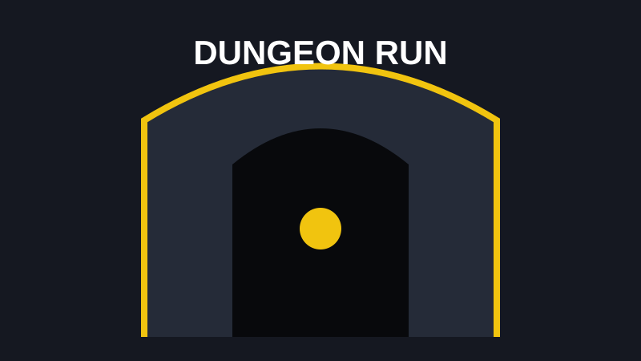

EXTRACTION / FANTASY
Dark and Darker
Dark and Darker mixes dungeon crawling with extraction gameplay. Every trip into the dungeon creates tension because better loot also means more to lose. Combat rewards patience, positioning, class knowledge, and knowing when it is smarter to escape.
Best for: players who enjoy risk, loot progression, PvP, and difficult matches where decisions matter.